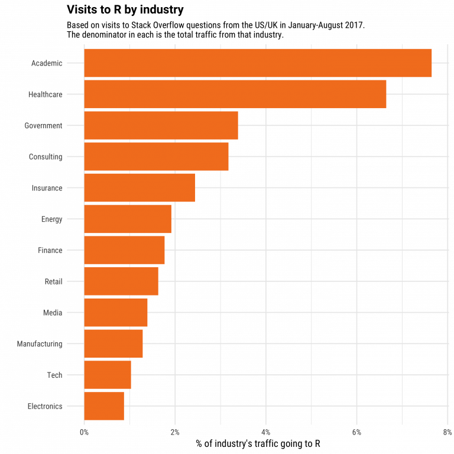
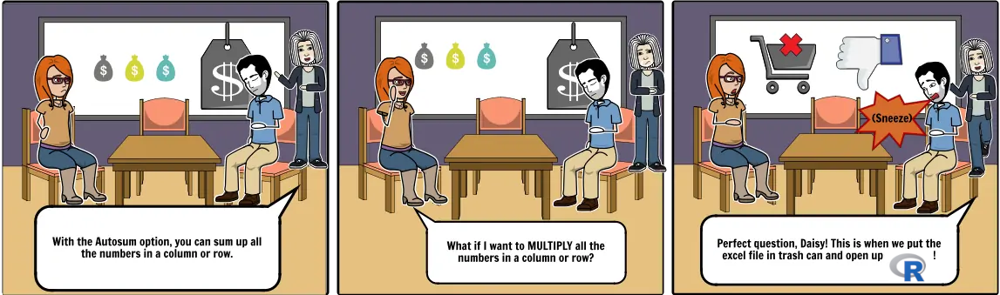

1 Einführung
1.1 Kursbeschreibung
In diesem Kurs beschäftigen wir uns mit den Grundlagen und ausgewählten Anwendungsmöglichkeiten der Programmiersprache R für Zwecke der Datenauswertung in der humangeographischen Forschung. Dabei werden keinerlei Vorkenntnisse in Programmierung o.ä. benötigt, grundlegende Kenntnisse beschreibender Statistik sind aber von Vorteil. Das Ziel des Kurses ist, die Teilnehmer*innen zur selbstständigen Arbeit mit R zu befähigen und sie auf fortgeschrittene Anwendungen vorzubereiten.
In den Sitzungen werden wir uns gemeinsam die unterschiedlichen Schritte der Datenauswertung erarbeiten und diese durch praktische Übungen vertiefen. Zu diesen Schritten zählen:
- das Einlesen und Schreiben von Daten, also das Importieren und Exportieren von Daten in unterschiedlichen Dateiformaten;
- das Bereinigen von Daten, also das Säubern undeutlicher Daten oder das Verändern ihrer Struktur in ein ordentliches Format, mit dem einfacher zu arbeiten ist;
- das Transformieren von Daten, also das Hinzufügen und Entfernen von Variablen oder Beobachtungen oder das Berechnen von Statistiken;
- das Visualisieren von (Geo-)Daten, also das Erzeugen von Grafiken wie Diagrammen oder Karten, um aus Daten Erkenntnisse abzuleiten oder Ergebnisse zu präsentieren;
- das Dokumentieren der Arbeitsschritte und das Kommunizieren von Ergebnissen, also das Verfassen von Skripten, die R-Code enthalten, oder Dokumenten, die unseren Arbeitsablauf samt seiner Ergebnisse darstellen.
Die erforderlichen Leistungen umfassen die regelmäßige und aktive Teilnahme an den Sitzungen und deren Vor- und Nachbereitung sowie eine eigene Datenauswertung in Form eines kurzen Projektberichts.
Erwartungsmanagement
Ein Kurs dieses Umfangs muss sich auf die Grundlagen von R und ausgewählte Anwendungsmöglichkeiten beschränken. Deshalb orientieren wir uns maßgeblich an ausgewählten Inhalten des Standardwerks R for Data Science (Wickham, Çetinkaya-Rundel, und Grolemund 2023). Auf das zunehmend unübersichtliche Angebot an Möglichkeiten zum Selbststudium gehen wir später ein.
1.2 Was ist R?
1.2.1 Hintergrund
Im Jahr 1992 wurde die Programmiersprache R an der Universität Auckland, Neuseeland, von den Statistikern Ross Ihaka und Robert Gentleman entwickelt. Ihren Namen erhielt sie sowohl von den Vornamen der Entwickler als auch von der Programmiersprache S, die R zu Beginn beeinflusst. Seit 1995 ist R als Software frei im Sinne der GNU General Public License verfügbar. Mit der R Foundation ist seit 2003 eine nicht-gewinnorientierte Organisation maßgeblich für die Entwicklung und Verbreitung von R verantwortlich. Ursprünglich wurde R als auf statistische Anwendungen konzentrierte Programmiersprache entwickelt und ist in diesem Bereich noch immer führend. Mit der Zeit wurden jedoch die Anwendungsbereiche und Möglichkeiten stetig größer. Gegenwärtig ist R besonders unter Akademiker*innen und Forscher*innen in der Privatwirtschaft, was seine Forschungsorientierung unterstreicht.
1.2.2 Warum R lernen?
Für Interessierte, die die Grundlagen von Programmieren und/oder statistischer Auswertungen – heute gemeinhin als data science bezeichnet – erlernen wollen, gibt es inzwischen zahlreiche Optionen und die Wahl kann schwerfallen. Neben R werden dabei insbesondere Programmiersprachen wie Python oder auch JavaScript empfohlen, die beide an Popularität zunehmen. Dennoch gibt es weiterhin gute Gründe, die Zeit zu investieren, R kennenzulernen. Das gilt auch, wenn das eigene Interesse lediglich auf eine Alternative zu Excel und Co. abzielt.

Hier eine Auswahl von Gründen, R zu lernen:
- R ermöglicht nachvollziehbare und überprüfbare Datenauswertung. Statt Klick-Anleitungen zu folgen und die eigenen Arbeitsschritte später nicht mehr nachvollziehen zu können, können wir mit R unsere Auswertungen klar dokumentieren und ohne großen Aufwand wiederholen.
- R lernen heißt, die Grundlagen des Code-Schreibens und Programmierens zu lernen. Wer einmal Begriffe wie Objekte, Variable, Funktion oder Schleife gehört hat, kann diese Konzepte leichter auf andere Sprachen anwenden. In dieser Hinsicht unterscheiden sich Programmiersprachen nicht von Alltagssprachen.
- R ist quelloffen und frei verfügbar. Es ist nicht nötig, käuflich eine Lizenz zu erwerben. Jede*r Nutzer*in darf R eigenständig aktualisieren, verändern und verbreiten.
- R ist plattformübergreifend. Ob Windows, MacOS oder Linux – R lässt sich auf allen gängigen Betriebssystemen installieren und nutzen. Es kann außerdem Daten proprietärer sowie offener Dateiformate problemlos importieren.
- R hat umfangreiche Erweiterungen. Neben den Kernfunktionen von R werden beständig sog. packages der R-Bibliothek hinzugefügt. Gegenwärtig sind mehr als 21.000 solcher Erweiterungen verfügbar.1 Einige dieser packages verändern die Nutzung von R erheblich und haben sich mit der Zeit als Standard etabliert (wir werden mit den Packages des
tidyverseein wichtiges Beispiel hierfür kennenlernen). Für die meisten Anwendungsgebiete liegen spezialisierte Packages mit guter Beschreibung vor. - R hat eine große Basis. Aufgrund seiner breiten Möglichkeiten gibt es zahlreiche Möglichkeiten, mit anderen R-Nutzer*innen in den Austausch zu kommen. Kaum jemandem stellt sich eine bestimmte Frage oder begegnet ein bestimmtes Problem zum ersten Mal. Wer R lernt, kann deshalb auf die Erfahrungen Anderer zurückgreifen.
- R ermöglicht herausragende Visualisierungen. Anders als viele andere Programmiersprachen legt R Nachdruck auf hochwertige, systematische Visualisierungen. Ob Diagramm oder Karte, statisch oder interaktiv – R verfügt über Möglichkeiten zur Umsetzung.2 In dieser Hinsicht gilt R solchen Alternativen wie Python als überlegen.
- R kann selbst interaktive Web-Applikationen oder sog. dashboards, die dynamisch Text, Tabellen und Grafiken enthalten, erzeugen. Viele Unternehmen und Behörden nutzen R, um ihrerseits Daten zu präsentieren.
- R ist stark im Bereich data science. Das gilt nach wie vor, obgleich mit Python und Co. andere Sprachen ebenfalls an Popularität zunehmen und noch mehr Nutzer*innen aufweisen.
1.3 Installation und Vorbereitung
Bevor wir uns Inhalten zuwenden können, müssen wir zunächst sicherstellen, dass alle Teilnehmer*innen mit derselben Ausgangslage starten.
1.3.1 R
Bevor wir R nutzen können, müssen wir es installieren. Die jeweils aktuellste Version3 lässt sich über CRAN (Comprehensive R Archive Network) installieren. Installieren Sie auf Ihrem eigenen Rechner mithilfe der angegebenen Anweisungen R.
1.3.2 RStudio
Um mit R zu arbeiten, wird in diesem Kurs die Entwicklungsumgebung (integrated development environment, kurz IDE) RStudio zur Anwendung kommen. Laden Sie sich auch hierfür die entsprechende Installationsdatei herunter und installieren Sie RStudio.4
1.3.3 Kursverzeichnis
Legen Sie ein neues Verzeichnis, z.B. WiSe24_Einfuehrung_in_R, an einem geeigneten Ort auf Ihrem Rechner an.
1.3.4 R-Projekt
Unter Zuhilfenahme von RStudio können wir sog. R projects anlegen. Hierbei handelt es sich um die nützliche Möglichkeit, mittels nur einer Datei (mit der Endung .Rproj) alle nötigen Bestandteile einer Datenauswertung (wie etwa Skripte und Objekte – diese Begriffe erläutern wir später noch) so zu verbinden, dass sie nach Beendigung unserer Arbeit mit einem Klick wiederhergestellt werden können.
Um für den weiteren Kursverlauf ebenfalls ein Projekt anzulegen, folgen Sie den folgenden Schritten:
- Öffnen Sie RStudio. Klicken Sie oben rechts auf
Project: (None). - Wählen Sie
New Project5 aus und klicken im sich öffnenden Assistenten aufExisting Directory. Navigieren Sie mittelsBrowsezu dem Verzeichnis, das Sie zuvor angelegt haben. - Beenden Sie den Vorgang mit einem Klick auf
Create Project.

RStudio öffnet nun das Projekt, das so benannt ist wie Ihr Kursverzeichnis (siehe Schaltfläche oben rechts, wo zuvor noch Project: (None) stand).6 Ein geöffnetes Projekt können Sie über das Dropdown-Menü (↓) mit Close Project schließen. Gleichermaßen können Sie mit Open Project ein bestehendes Projekt öffnen. Befinden Sie sich in Ihrem Kursverzeichnis, können auch mit Doppelklick auf die .Rproj-Datei das Projekt öffnen.7
1.3.5 Packages
In diesem Kurs verwenden wir eine Reihe an Paketen. Pakete sind Sammlungen von Funktionen, wir wir sie in den nächsten Sitzungen kennenlernen werden. Beim Start einer neuen R-Sitzung werden unter anderem die grundlegenden Pakete base, stats und utils geladen. Viele weitere Pakete müssen erst installiert werden, um ihre Funktionen nutzen zu können.
Um sicherzugehen, dass uns alle notwendigen Pakete zum richtigen Zeitpunkt vorliegen, installieren wir Sie mithilfe von install.packages(). install.packages() ist selbst eine Funktion, die in einfachen oder doppelten Anführungszeichen die Namen der zu installierenden Pakete benötigt (wozu die Funktion c() dient, lernen wir in der nächsten Sitzung!).
Kopieren Sie hierfür den folgenden Code in das RStudio Fenster Console, das sich links unten befindet und bestätigen Sie die Eingabe mit Enter. Die Installation dauert eine Weile.
install.packages(c("crsuggest",
"gapminder",
"geodata",
"ggspatial",
"ggthemes",
"janitor",
"palmerpenguins",
"Rcpp",
"readxl",
"rmarkdown",
"sf",
"starwarsdb",
"terra",
"treemapify",
"tidyverse",
"viridis"))
Probleme beim Installieren von Paketen
Sollte es dabei zu einem Fehler kommen, wird in Ihrer Konsole der Fehler installation of package had non-zero exit status angezeigt werden.
- Sollten Sie mit einem Windows-Rechner arbeiten, könnte es nötig sein, dass Sie zusätzlich zu R auch noch
Rtoolsinstallieren müssen. - Sollten Sie mit einem Linux-Rechner arbeiten, könnte die Installation weiterer Pakete – je nach Distribution – nötig sein. Die R-Fehlermeldung sollte Ihnen weitere Hinweise geben, welche Pakete derzeit fehlen.
- Sollten Sie mit einem MacOS-Rechner arbeiten, könnte es nötig sein, dass Sie die die XCode command-line tools installieren und/oder zurücksetzen. Öffnen Sie dafür ein Mac Terminal und führen Sie folgende Befehle aus:
xcode-select --install
# Falls die Installation der R Packages dann immer noch nicht klappt:
xcode-select --resetSollten Sie derartige Probleme selbst nicht lösen können, können Sie mich jederzeit um Unterstützung bitten.
upGrad. 2022. „Why learn R? Top 8 Reasons To Learn R in 2024“. upGrad. https://www.upgrad.com/blog/why-learn-r-top-reasons-to-learn/.
Wickham, Hadley, Mine Çetinkaya-Rundel, und Garrett Grolemund. 2023. R for Data Science. Import, Tidy, Transform, Visualize and Model Data. 2nd Aufl. Sebastopol: O’Reilly. https://r4ds.hadley.nz/.
Stand: September 2024.↩︎
Die R Graph Gallery bietet viele Beispiele hierfür.↩︎
Im September 2024 ist dies Version 4.4.1.↩︎
Um bei zügiger Installation etwas vorzugreifen, können Sie sich dieses Video anschauen, das den Aufbau von RStudio erklärt.↩︎
Über
File→New Projectkönnen Sie denselben Schritt vornehmen.↩︎Sie können auch in die Konsole
getwd()eingeben, was für get working directory steht, das Ergebnis gibt Ihnen den gesamten Dateipfad zu dem Verzeichnis an, in dem Sie gerade arbeiten.↩︎Sollten Sie Schwierigkeiten mit dem Verständnis von Projekten haben, könnte dieses Video helfen.↩︎